Caça Talentos
| reprisado de | 22/05/2010 a 17/05/2012 (1º ciclo) |
|---|---|
| em 496 capítulos e 1 especial | |
| frequência | sábados e domingos |
| faixa | oito da manhã |
| horário alternativo | n/a |
Novelinha infantil com aventuras que se renovavam, quase sempre, de semana a semana, exibida originalmente no final da manhã, de 1996 a 1998. Angélica interpreta uma fada que, após crescer em um mundo mágico, ganha a oportunidade de viver um "período de experiência" junto aos seres humanos, uma vez que nasceu humana. Ela só não esperava se deparar com o único sentimento que a impediria para sempre de reencontrar seus amigos do mundo mágico onde cresceu: o amor.
Caça Talentos foi o quarto programa de cunho infantojuvenil a ser exibido no Viva. Na grade inicial, esse tipo de conteúdo ocupava uma sequência matutina, que exibia, durante a semana, Sítio do Picapau Amarelo, Sandy & Junior e Malhação. Caça Talentos, por sua vez, ficava "escondida" nas manhãs de sábado e domingo, às 8h, sem horários alternativos. Como resultado da frequência semanal, a novela tinha apenas 2 capítulos reprisados por semana. Tratando-se de um programa com quase 500 edições inéditas, isso significaria uma reprise de mais de 4 anos no ar em apenas um ciclo!
Em outubro de 2010, o Viva realizou uma série de mudanças na estrutura original de sua grade e Caça Talentos tornou-se diário, agora de segunda-feira a sexta-feira, às 14h30, horário anteriormente ocupado por Sandy & Junior, que foi para os domingos, às 11h. Caça Talentos também apresentava um horário alternativo, às 8h30 do dia de exibição seguinte.
Em fevereiro de 2011, a exibição de Caça Talentos saltou cerca de 25 episódios originais, 5 histórias, exibidos originalmente entre abril e maio de 1997, sem razão aparente. Esses episódios só foram exibidos no 2º ciclo de exibição, já entre novembro e dezembro de 2012, e ainda assim com diversos pulos entre eles. Somente em uma reprise posterior, quase ao final da década de 2010, tais capítulos deixaram de ser omitidos da exibição no Viva.
Em abril de 2012, Armação Ilimitada substituiu Sítio do Picapau Amarelo às 13h. O Viva teve de retardar em meia hora as atrações subsequentes: Caça Talentos foi para às 14h, com horário alternativo às 9h. No 2º trimestre de 2013, esse alternativo foi antecedido para 8h30, onde antes havia uma 2ª exibição de Escolinha do Professor Raimundo, que foi para o final da manhã, às 11h, acompanhar o horário alternativo do bloco vespertino da faixa Viva Rindo, às 11h30.
Em 20/04/2012, sexta-feira, o Viva exibiu o último capítulo da penúltima saga de Caça Talentos, "Lendas e Cascatas". Em 23/04/2012, no lugar de dar início a "Casamento Pra Você", história que encerra a novela, o Viva exibiu seu primeiro capítulo, resetando o ciclo antes da hora. Os fãs chamaram a atenção em redes como o Twitter, o Orkut e o Facebook, e em 26/04/2012, quinta-feira, "Casamento Pra Você" entrou no ar. Os 30 capítulos dessa saga possuem duração inferior ao padrão da série, geralmente com 15 minutos cada. Para preencher o período destinado a Caça Talentos na grade diária, de meia hora, o Viva a apresentava com 2 capítulos "inéditos" por dia. A exceção coube aos 2 últimos capítulos, com quase 20 minutos cada, apresentados em 16 (quarta-feira) e 17/05/2012 (quinta-feira), respectivamente.
Caça Talentos continuou no ar em um 2º ciclo de exibição, em mesma frequência e horário. Em 24/12/2013, terça-feira, como parte de sua programação especial de fim de ano, o Viva exibiu o especial de Natal de Caça Talentos, um programa de maior duração exibido originalmente em horário nobre, no sábado de 28/12/1996.
Em fevereiro de 2014, com a transferência de Vale a Pena Ver de Novo, na Globo, para o fim da tarde, o Viva reestruturou sua grade vespertina, agrupando todas as suas novelas no ínterim anteriormente destinado a Dallas, Caça Talentos, Malhação e o bloco vespertino da faixa Viva Rindo. Assim, Caça Talentos foi parar às 17h. O horário alternativo às 8h30 foi mantido.
Caça Talentos chegou ao fim deste 2º ciclo em 11/04/2014, sexta-feira. Em 14/02/2014, foi substituída por Flora Encantada, outra trama infantil com Angélica. Caça Talentos ganhou uma nova reprise no Viva em 2019, ao final da manhã, com 2 capítulos originais reprisados por dia.
chamadas
Caça Talentos ganhou uma chamada em outubro de 2010, após pouco mais de 4 meses de exibição, com seu ingresso à sequência diária de infantojuvenis: "A atrapalhada fada Bela tem a receita para as suas tardes ficarem mágicas! Ou, pelo menos... mais engraçadas. E o mundo real não vai ser o mesmo com os feitiços dessa galera! De segunda a sexta, uma e meia da tarde, Caça Talentos!"
- 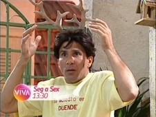
- 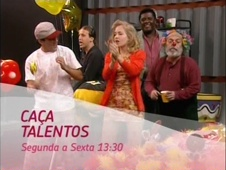
- 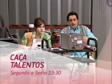
A novela também foi incluída na chamada em combo das atrações infantojuvenis: "Aqui a gente sabe como é bom ser criança! Mas, convenhamos, crescer também é uma delícia. Suas tardes são mais divertidas com o Sítio do Picapau Amarelo, Caça Talentos e Malhação!"
- 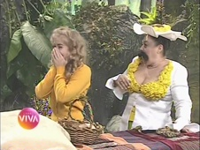
- 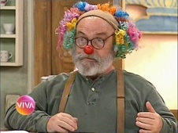
- 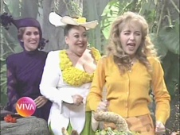

Em 2011, o combo de atrações infantojuvenis ganhou uma promoção com locução infantil: "Nós, crianças, também temos vez no canal Viva: segunda, terça, quarta, quinta e sexta tem Sítio do Picapau Amarelo, Caça Talentos e Malhação. Malhação não é pra criança pequena, é pra criança grande, hein? Viva, o canal do seu jeito."
- 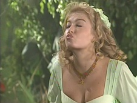
- 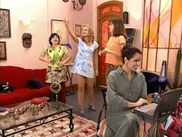
Em meados de julho daquele ano, Caça Talentos foi agraciada com uma nova chamada. "Não seria ótimo poder dar uma fugidinha do mundo real, e resolver todos os seus problemas com passes de mágica? De segunda a sexta, uma e meia da tarde, Caça Talentos!"
- 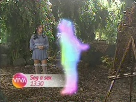
- 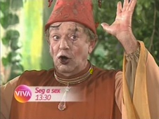
Em 2012, já próxima do fim de seu 1º ciclo, Caça Talentos era assim promovida: "Você que sempre sonhou em encontrar um príncipe encantado... gostaria que as pessoas fossem mais sinceras... e que todos os problemas do mundo se resolvessem em um passe de mágica... bem vindo à Caça Talentos! De segunda a sexta, uma e meia da tarde. No Viva.".
- 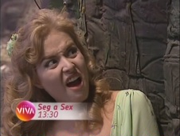
- 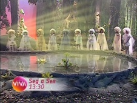